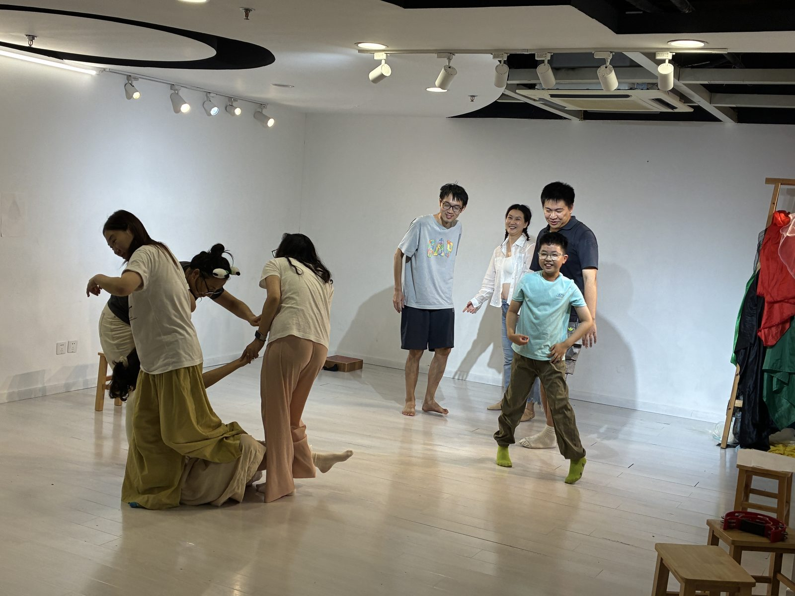
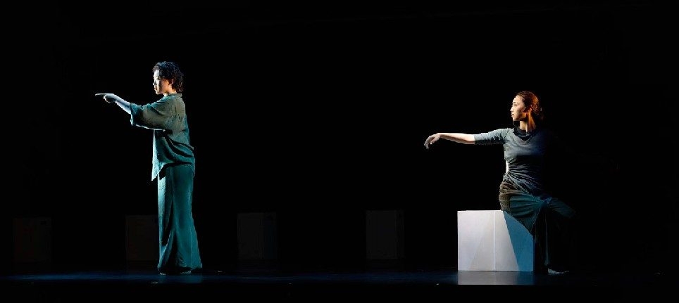
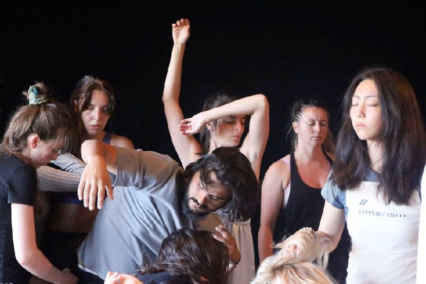
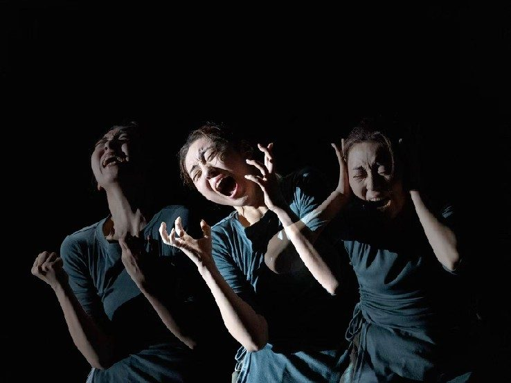
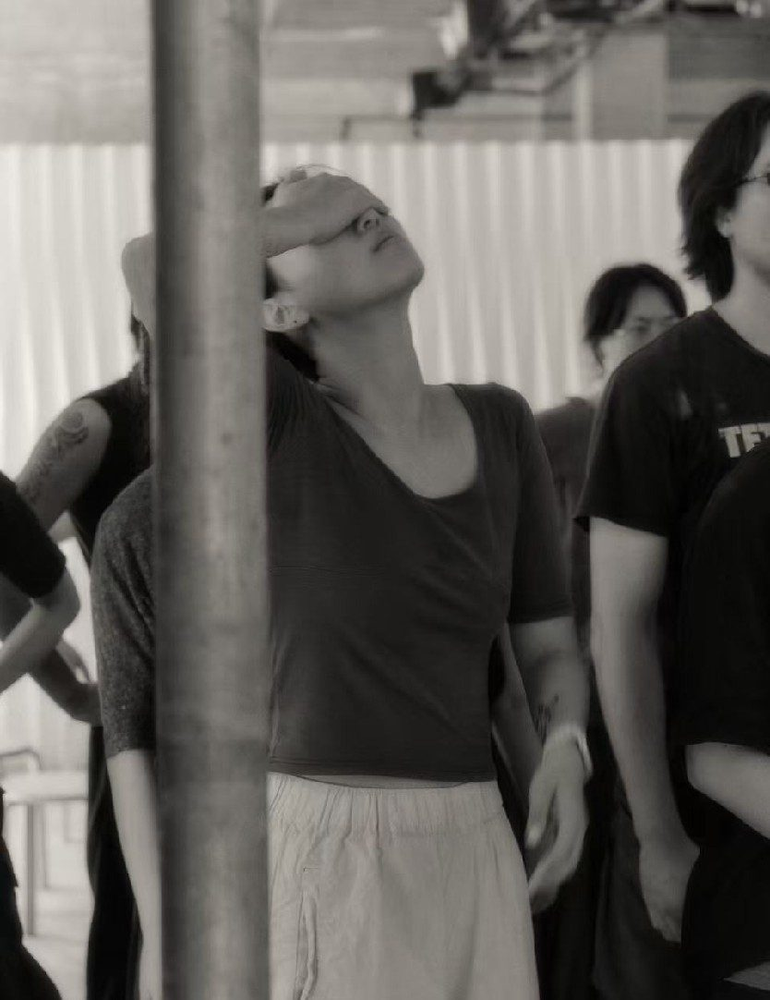
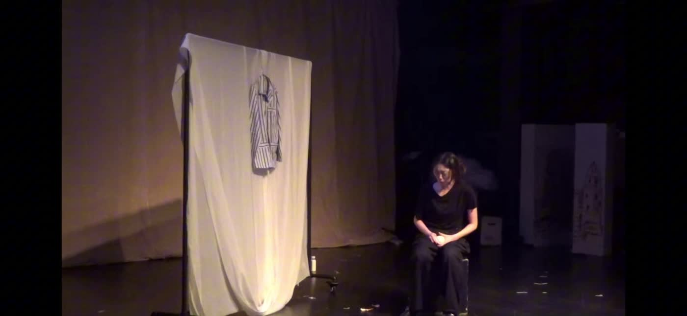
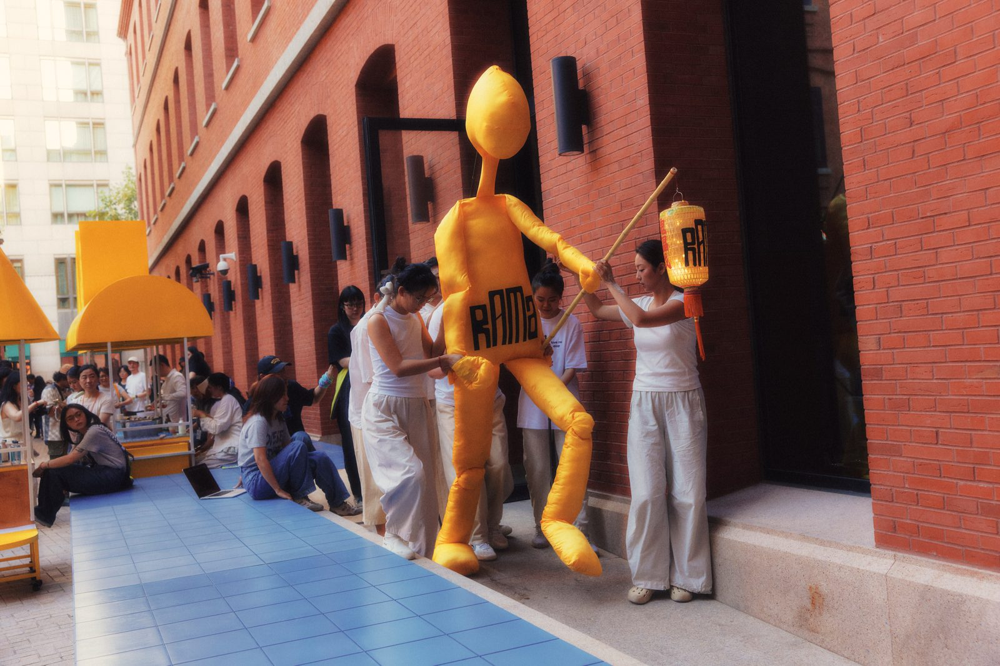
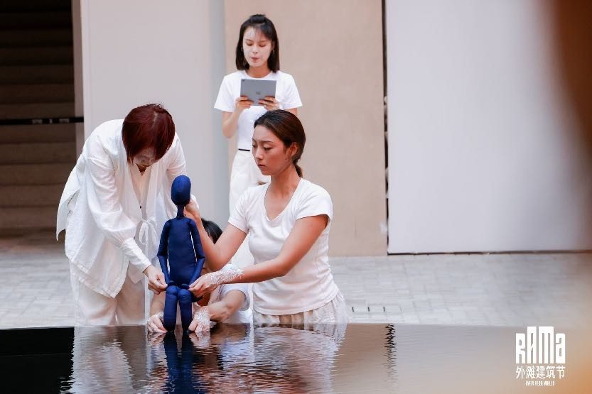

03 / PRACTICE
Questions that continue beyond a production.
Writing, devising, body-based work and artistic research meet here. This is where the process behind the productions is kept: residencies, puppetry and object work, rehearsal questions, and the training that keeps being reworked.
Residencies and research
Periods of study and making away from production — the part of the practice that feeds everything else.



InteRussia fellowship in Theatre Arts at the Russian Institute of Theatre Arts (GITIS).
l’aria, the 8th International Meetings of Theatre Schools. Improvisation sharing with tutors Serge Nicolai and Samuli Nordberg, and a month of training with Finnish and French directors.




Puppetry and object work
A displaced body on stage: how a puppet can carry what a performer cannot say directly.


Co-directed, written and performed by Xiwei Ma. The piece examines the lived experience of womanhood through bodily memory, menstruation, shame and public vulnerability. At its centre is a puppet — a displaced body that lets the performers show the subtle, often invisible moments of voicelessness in daily life: adjusting stained clothing, lowering one’s gaze during harassment, suppressing breath, shoulders and speech. Through the puppet these micro-silences become visible, shared and collectively embodied.